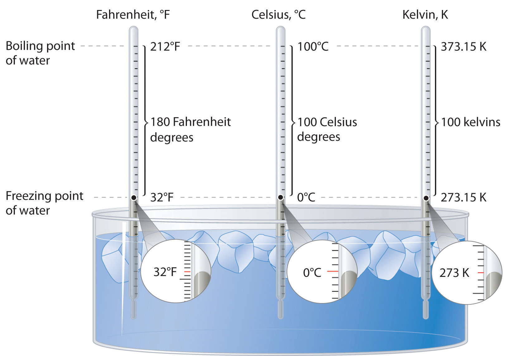

The previous Essential Skills sections introduced some fundamental operations that you need to successfully manipulate mathematical equations in chemistry. This section describes how to convert between temperature scales and further develops the topic of unit conversions started in Essential Skills 2 in Chapter 3 "Chemical Reactions", Section 3.7 "Essential Skills 2".
The concept of temperature may seem familiar to you, but many people confuse temperature with heat. Temperature is a measure of how hot or cold an object is relative to another object (its thermal energy content), whereas heat is the flow of thermal energy between objects with different temperatures.
Three different scales are commonly used to measure temperature: Fahrenheit (expressed as °F), Celsius (°C), and Kelvin (K). Thermometers measure temperature by using materials that expand or contract when heated or cooled. Mercury or alcohol thermometers, for example, have a reservoir of liquid that expands when heated and contracts when cooled, so the liquid column lengthens or shortens as the temperature of the liquid changes.
The Fahrenheit temperature scale was developed in 1717 by the German physicist Gabriel Fahrenheit, who designated the temperature of a bath of ice melting in a solution of salt as the zero point on his scale. Such a solution was commonly used in the 18th century to carry out low-temperature reactions in the laboratory. The scale was measured in increments of 12; its upper end, designated as 96°, was based on the armpit temperature of a healthy person—in this case, Fahrenheit’s wife. Later, the number of increments shown on a thermometer increased as measurements became more precise. The upper point is based on the boiling point of water, designated as 212° to maintain the original magnitude of a Fahrenheit degree, whereas the melting point of ice is designated as 32°.
The Celsius scale was developed in 1742 by the Swedish astronomer Anders Celsius. It is based on the melting and boiling points of water under normal atmospheric conditions. The current scale is an inverted form of the original scale, which was divided into 100 increments. Because of these 100 divisions, the Celsius scale is also called the centigrade scale.
Lord Kelvin, working in Scotland, developed the Kelvin scale in 1848. His scale uses molecular energy to define the extremes of hot and cold. Absolute zero, or 0 K, corresponds to the point at which molecular energy is at a minimum. The Kelvin scale is preferred in scientific work, although the Celsius scale is also commonly used. Temperatures measured on the Kelvin scale are reported simply as K, not °K. Figure 5.25 "A Comparison of the Fahrenheit, Celsius, and Kelvin Temperature Scales" compares the three scales.
Figure 5.25 A Comparison of the Fahrenheit, Celsius, and Kelvin Temperature Scales
Because the difference between the freezing point of water and the boiling point of water is 100° on both the Celsius and Kelvin scales, the size of a degree Celsius (°C) and a kelvin (K) are precisely the same. In contrast, both a degree Celsius and a kelvin are 9/5 the size of a degree Fahrenheit (°F).
The kelvin is the same size as the Celsius degree, so measurements are easily converted from one to the other. The freezing point of water is 0°C = 273.15 K; the boiling point of water is 100°C = 373.15 K. The Kelvin and Celsius scales are related as follows:
T (in °C) + 273.15 = T (in K) T (in K) − 273.15 = T (in °C)Degrees on the Fahrenheit scale, however, are based on an English tradition of using 12 divisions, just as 1 ft = 12 in. The relationship between degrees Fahrenheit and degrees Celsius is as follows:
where the coefficient for degrees Fahrenheit is exact. (Some calculators have a function that allows you to convert directly between °F and °C.) There is only one temperature for which the numerical value is the same on both the Fahrenheit and Celsius scales: −40°C = −40°F.
Solution:
In Essential Skills 2, you learned a convenient way of converting between units of measure, such as from grams to kilograms or seconds to hours. The use of units in a calculation to ensure that we obtain the final proper units is called dimensional analysis. For example, if we observe experimentally that an object’s potential energy is related to its mass, its height from the ground, and to a gravitational force, then when multiplied, the units of mass, height, and the force of gravity must give us units corresponding to those of energy.
Energy is typically measured in joules, calories, or electron volts (eV), defined by the following expressions:
1 J = 1 (kg·m2)/s2 = 1 coulomb·volt 1 cal = 4.184 J 1 eV = 1.602 × 10−19 JTo illustrate the use of dimensional analysis to solve energy problems, let us calculate the kinetic energy in joules of a 320 g object traveling at 123 cm/s. To obtain an answer in joules, we must convert grams to kilograms and centimeters to meters. Using Equation 5.4, the calculation may be set up as follows:
Alternatively, the conversions may be carried out in a stepwise manner:
However, this second method involves an additional step.
Now suppose you wish to report the number of kilocalories of energy contained in a 7.00 oz piece of chocolate in units of kilojoules per gram. To obtain an answer in kilojoules, we must convert 7.00 oz to grams and kilocalories to kilojoules. Food reported to contain a value in Calories actually contains that same value in kilocalories. If the chocolate wrapper lists the caloric content as 120 Calories, the chocolate contains 120 kcal of energy. If we choose to use multiple steps to obtain our answer, we can begin with the conversion of kilocalories to kilojoules:
We next convert the 7.00 oz of chocolate to grams:
The number of kilojoules per gram is therefore
Alternatively, we could solve the problem in one step:
The discrepancy between the two answers is attributable to rounding to the correct number of significant figures for each step when carrying out the calculation in a stepwise manner. Recall that all digits in the calculator should be carried forward when carrying out a calculation using multiple steps. In this problem, we first converted kilocalories to kilojoules and then converted ounces to grams. Skill Builder ES2 allows you to practice making multiple conversions between units in a single step.
Solution:
Our goal is to convert 1.5 kJ/g to Calories in 8 oz:
Our goal is to use the energy content, 48 kJ/g, and the density, 0.70 g/mL, to obtain the number of joules in 16.3 gal of gasoline: